Method 1 of 2: Do Your Research
-
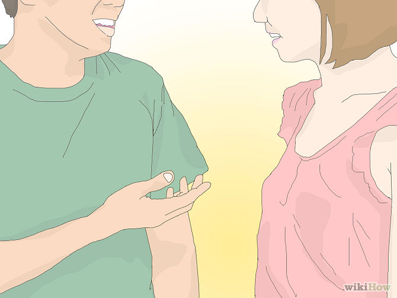
1. Be aware of your housemates.
You will first want to think about the people and creatures that you live with. If you have a roommate or family member who is allergic to dogs, doesn't like them, or simply does not want one, this problem will need to be resolved. Similarly, if you have other pets that are not compatible with dogs, you will want to reconsider. You may find that it is not possible for you to get a dog.
-
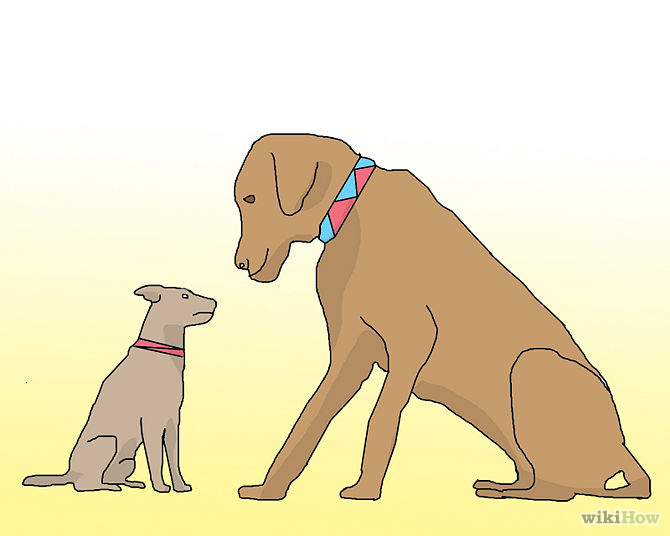
2. Decide the best size.
Once you've decided if it's possible for you to get a dog, you will need to decide what size of dog is best for you. If you have only a small amount of space, you will not want to get a very large dog. Many apartments put a cap on dog size, if they even allow dogs at all. However, if you live in a large space (especially one with other wildlife) or you need a protective dog, you will want to consider something larger.
-

3. Consider rescue dogs.
Now that you’ve decided what size is best for you, you will need to think about whether you want to rescue a dog or get one from a breeder. There are many benefits and downsides to both options, so you will need to consider carefully.
-
Getting a dog from a breeder will give you a better sense of what their temperament will be like, since dogs often take after their parents. You will also have better access to the dog’s medical history, as well as the medical history of it’s parents, which will allow you to foresee major health problems. However, this is only if the breeder is reputable. Bad breeders will mistreat their dogs and you will end up with a very unpleasant, unhealthy animal.[1]
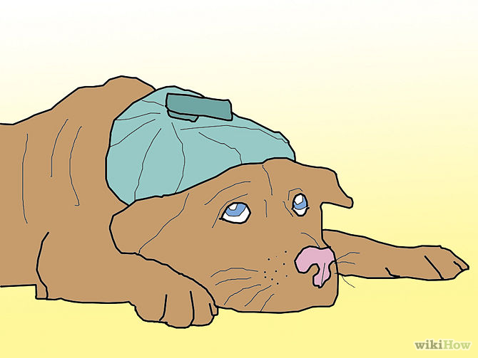
-
Getting a dog from a shelter will allow you to help your community by taking responsibility for the animal. Many shelters will kill animals which reside there for too long, so in adopting you are likely saving the animal’s life. There are very wonderful, well-temperamented dogs in shelters and you should not feel that by adopting you are getting a lesser quality pet.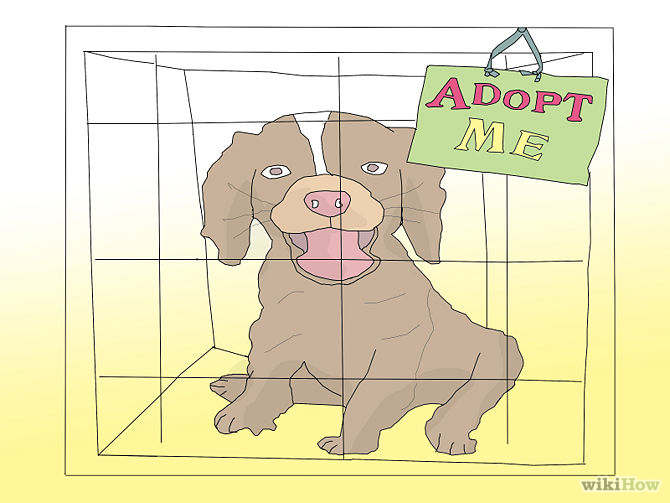
-
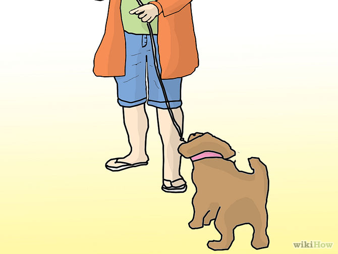
4. Think about the amount of time you have.
Getting a dog that needs lots of exercise when you work a lot is bad because if you don't have enough time to give him long walks then you'll have problems with training.
-
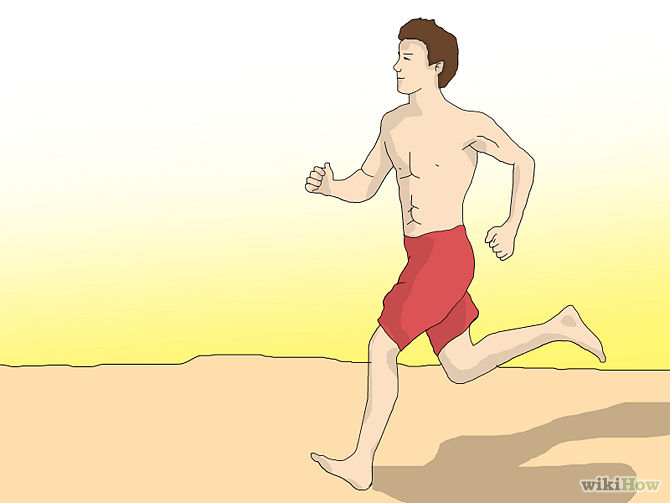
5. Consider your lifestyle.
You will also need to think about your life and how a dog will fit into it. A large dog will absolutely require walks to keep healthy and mentally alert, especially if you do not have a large space for them to run around in. Most dogs are very social and require a great deal of attention and love. If you are constantly traveling or working and spend little time at home, you probably will not have the necessary time to devote to an animal.
-
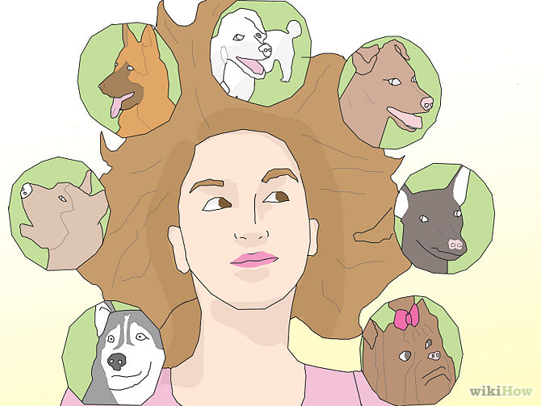
6. Understand the different breeds.
A dog’s breed can have a significant impact on it’s personality, as well as contributing to a wealth of other factors, such as the dog’s size, health, and required maintenance. Consider what type of dog you’d like before proceeding.[2]
-
Breed appearance will likely play a part in your decision about what dog to get. You will want to choose a breed which you find visually appealing. For example, some people find pugs to be very cute, while others find them to be very ugly. Choose a dog that you find endearing, in order to better help you bond to and enjoy your new companion.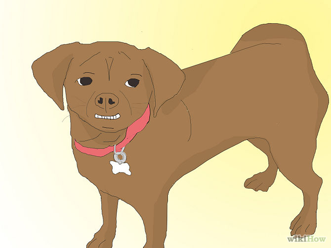
-
Breed temperament will play a huge role in deciding what type of dog to get. If you have children, for example, you will want to find a dog from a breed that is well known for being gentle and patient. If you need a protective animal, you will need to choose a dog that is known to have those qualities. Certain breeds, like pit bulls, are considered by some people to be very dangerous and would be good for a protective animal but may be a poor choice for a family dog. Do your research to determine what is right for you.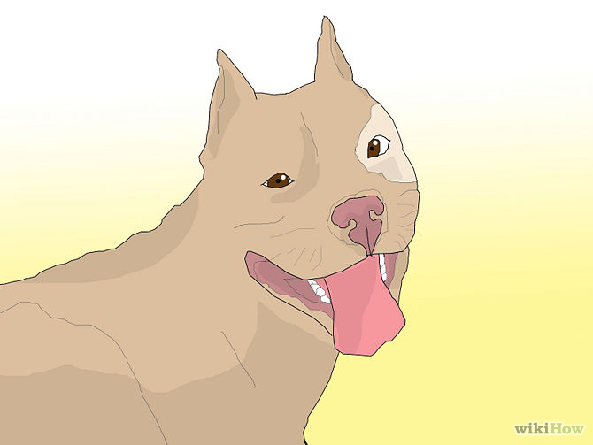
-
Certain health problems are known to be common in particular breeds. You will want to research the breeds you are considering and decide if their associated health risks are acceptable to you. One way to help with this problem is to get a mixed breed dog, which will have much higher resistance to disease and have lower potential for genetic problems.
-
Maintenance will also need to be considered when choosing a dog. Long-haired breeds, like Collies, may be beautiful but they require frequent brushing. If you may not have time to devote to weekly or even daily maintenance, you will need to take this into account.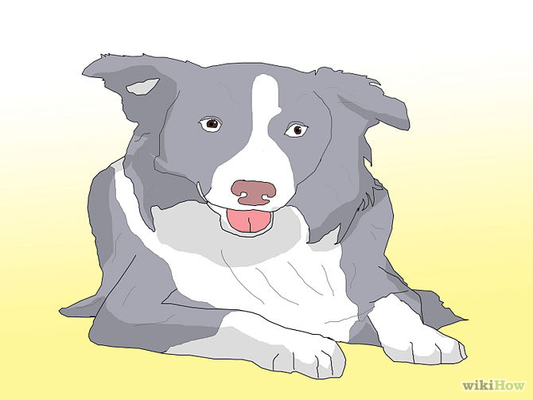
-
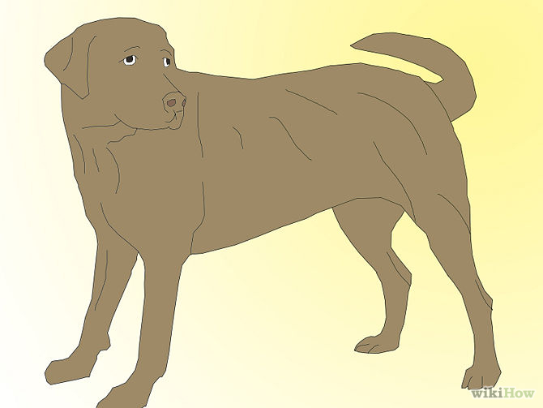
7. Choose an appropriate age.
The final factor to consider before looking for a dog is what age you would like the dog to be. There are various benefits and downsides to adopting a puppy versus an adult dog or an elderly dog.
- For example, a puppy will require training, an adult dog may be difficult to break of old habits, and an elderly dog will have health problems. However, puppies can grow together with your children to form memories and long-lasting friendships, adult dogs likely won’t need to be trained to use the bathroom, and elderly dogs can make great companions for elderly people.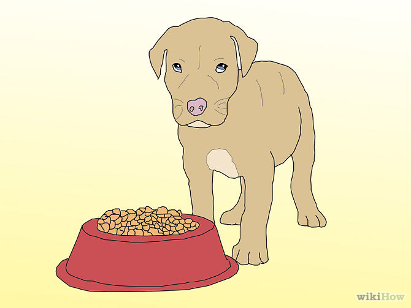
Method 2 of 2: Meet Potential Dogs
-
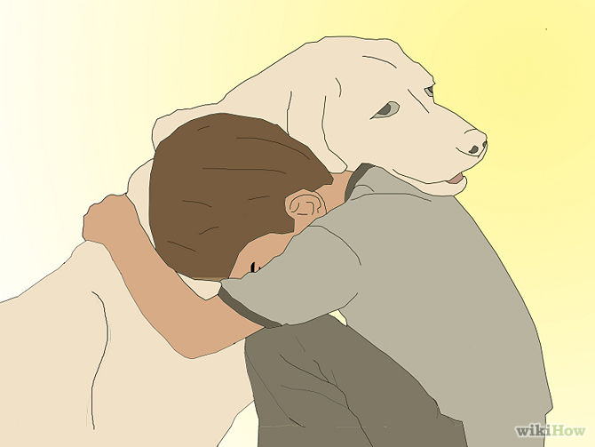
1. Meet the dog.
After you have done your research and made all of the considerations listed above, you will want to meet with the dog you are considering adopting. Try to gauge the dog’s personality by playing with it, giving it physical affection, and talking with it. Understand that it may be shy but that does not necessarily mean it is unaffectionate. Spend as much time with the dog as possible, to increase your understanding of the dog’s personality. If it does not feel like a good fit, don’t adopt the dog.
-
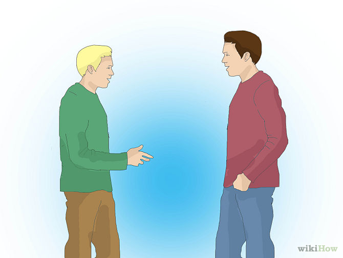
2. Ask about the dog’s behavior.
Ask the breeder or shelter attendants about the individual dog’s personality and behavior. You may wish to also enquire as to the personalities of other dogs in their care, since if they give the same response for each, they probably do not know the dogs very well and may be a bad choice.
-
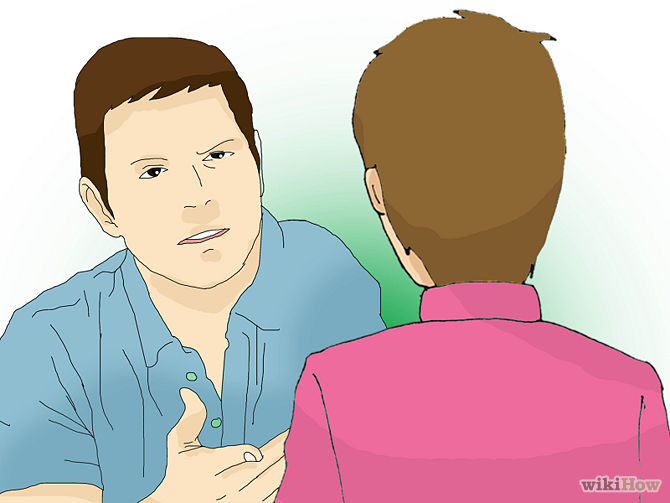
3. Ask to see the parents.
If you are getting a dog from a breeder, ask to see the dogs parents. Interacting with the animal’s parents will give you a way to gauge what your dog will act like as it grows up. Most breeders will understand and accommodate such a request.
-
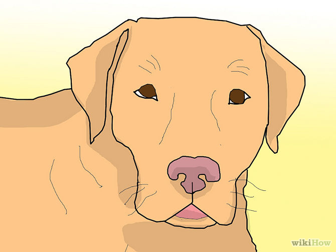
4. Set up a temporary foster situation.
If you are still unsure, it may be possible to set up a temporary situation, especially if the dog is coming from a shelter. You may be able to foster the dog, or several dogs over a long period of time. You should also choose a shelter with a reasonable return policy. Do not expect to get your adoption fee back if you return the dog, but the shelter should not refuse returns outright.
☠ Warnings ☠
-
Make sure that you are aware of whether or not a puppy has had it's shots.
-
House-training animals is very hard. Don't give up!
-
Avoid "backyard" breeders, who will often have very unhealthy, neglected animals.
-
Never buy a dog on a whim. They are a large, long-term commitment and should be carefully considered.
-
Be careful buying dogs over the internet as you don't know what the dog may be like so make sure you actually meet the dog before buying.
Things You'll Need
- Crate
- Food and water dishes
- Food and water
- Toys
- Spay/Neuter (optional)
- Small breeds will sometimes need clothing (sweaters, booties, etc.)
- Larger breeds will sometimes need a car restraint for the safety of the pet and driver.
- Correctly fitting collar
- Correctly fitting leash and harness
- Treats